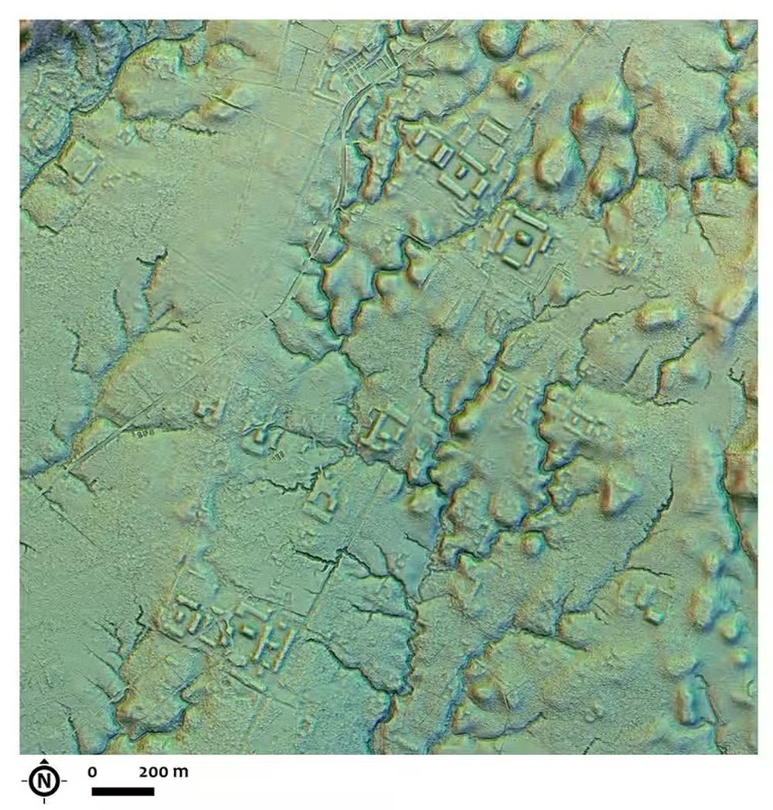
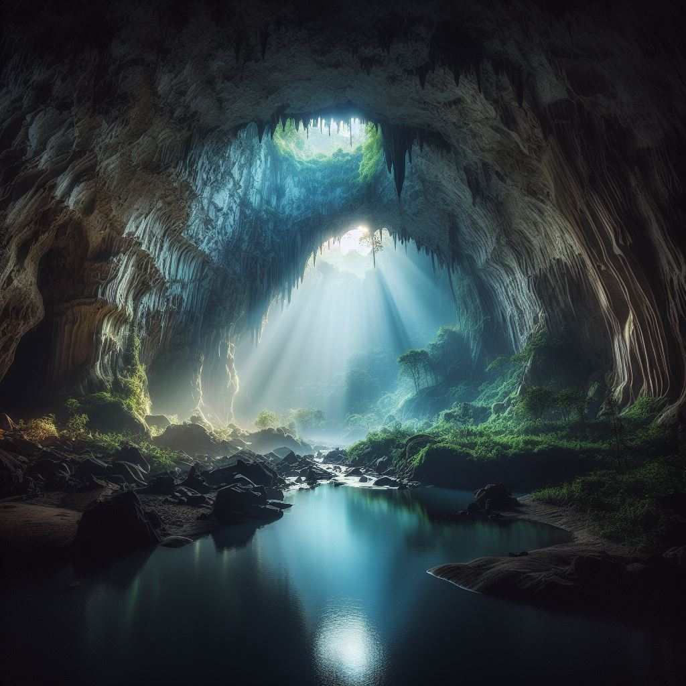

As Cidades Interconectadas
Arqueólogos fazem uma descoberta extraordinária no Vale Upano do Equador, revelando uma densa rede de cidades interconectadas que remontam a pelo menos 2,5 mil anos. Esta descoberta surpreendente supera em mais de mil anos qualquer outra sociedade complexa conhecida na Amazônia.
Publicado na revista Science, o estudo liderado pelo arqueólogo Stéphen Rostain revela mais de 6 mil plataformas de terra dispostas geometricamente, conectadas por estradas e entrelaçadas com paisagens agrícolas no Vale Upano. A descoberta é uma janela para uma civilização ancestral até então desconhecida na região amazônica.
Mapa da cidade de Kunguits


A Cronologia das descobertas
Após quase 30 anos de escavações, a equipe de Rostain explorou grandes assentamentos como Sangay e Kilamope, encontrando montes organizados em torno de praças centrais, cerâmica decorada e até mesmo grandes jarras contendo restos da tradicional cerveja de milho, a chicha.
Em 2015, um avanço tecnológico crucial ocorreu com o financiamento do Instituto Nacional de Patrimônio Cultural do Equador, utilizando a tecnologia Lidar. O levantamento aéreo revelou cinco grandes e dez pequenos assentamentos em uma área de 300 km², todos densamente povoados com estruturas cerimoniais e agrícolas.
A descoberta inclui estradas largas e retas, ruas entre casas e bairros, sugerindo um nível avançado de urbanismo. Embora a população exata ainda seja incerta, estimativas apontam para pelo menos 10 mil habitantes no Vale Upano, possivelmente atingindo entre 15 mil e 30 mil em seu auge, destacando a magnitude dessas antigas civilizações.
Esta descoberta não apenas redefine a história amazônica, mas também enfatiza a diversidade e complexidade das sociedades antigas na região. Os pesquisadores concluem que estão apenas começando a compreender a riqueza da história da Amazônia, destacando a importância dessas recentes revelações arqueológicas.
Ler Mais
A muralha Saudita
Muralha de 4 mil anos que protegia complexo de oásis é descoberta na Arábia Saudita.
Ler MaisA presença viking na América
As evidências de que os vikings chegaram à América 500 anos antes de Cristóvão Colombro
Ler MaisO Abrigo da preguiça-gigante
Um abrigo de preguiça-gigante foi descoberto no Rio Grande do Sul, divisa com o Uruguai.
Ler Mais